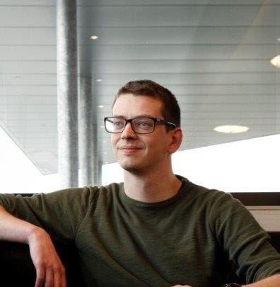
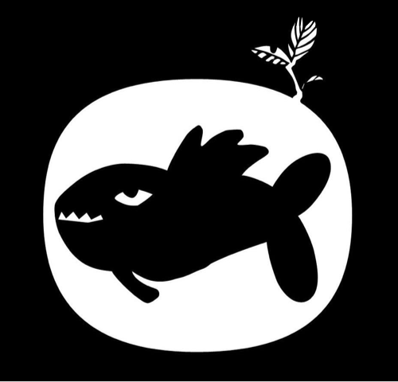

Jeroen who is he?

Hi my name is Jeroen De Man, I am 28 years old and live in Lokeren.
The start with SwitchFully and Colruyt Group will be my firts employment in the IT sector.
Before this I was working as a Social Worker in the organisation Weerwerk.
This organisation helps people who are or were addicted to drugs, back to a employment.
What do I do in my free time

Most of my free time goes to organizing a festival, Fonnefeesten.
I am a board member and responsible for the finacial follow-up.
Fonnefeesten is a 10 day free festival at the same moment of the Lokerse Feesten.
When I am not spending my time for the Fonnefeesten, I play games.
I play boardgames and computer games. I loke racing and strategy games.
When it is Formula 1 I try to follow the raceweekend, but you can find more information about this on the following page.
According to this, some karting with friends is always fun and a nice beer after the session makes it complete.
Why the switch?
When I had to make the choice of what I was going to study, there were two options
As you have read above, I made the choice to study socail work.
After a few years, I realized it would have been better to study IT.
A that moment I started my eduction in evening school, as programmer.
With 1 more year to go, the opportuninty of SwitchFully came along.
There was no doubt and I took my chance. And now I am looking forward to meet you all and start the program in september.
Until then,
Jeroen De Man